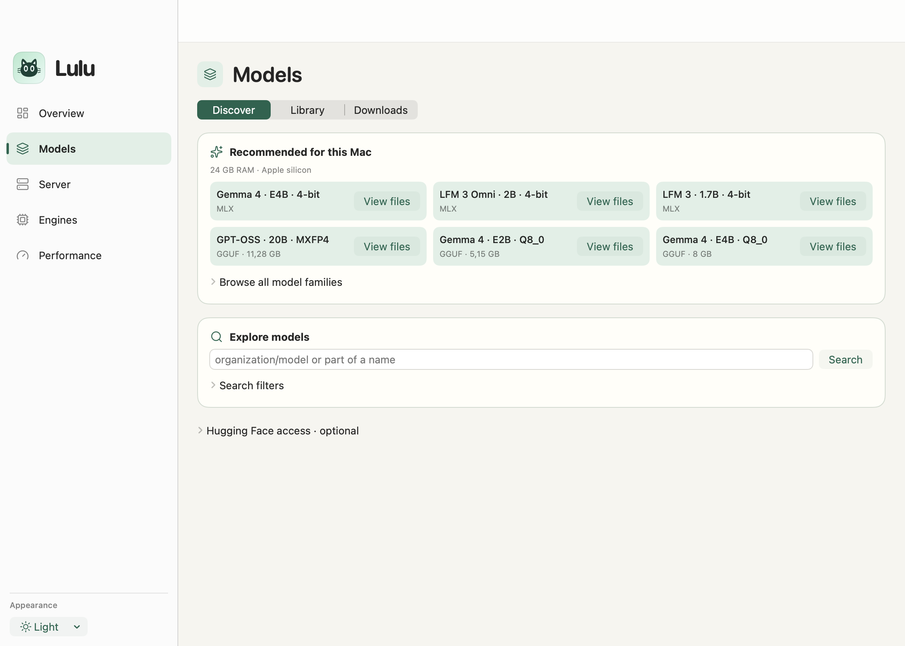
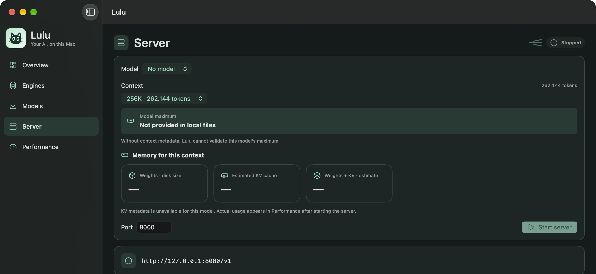
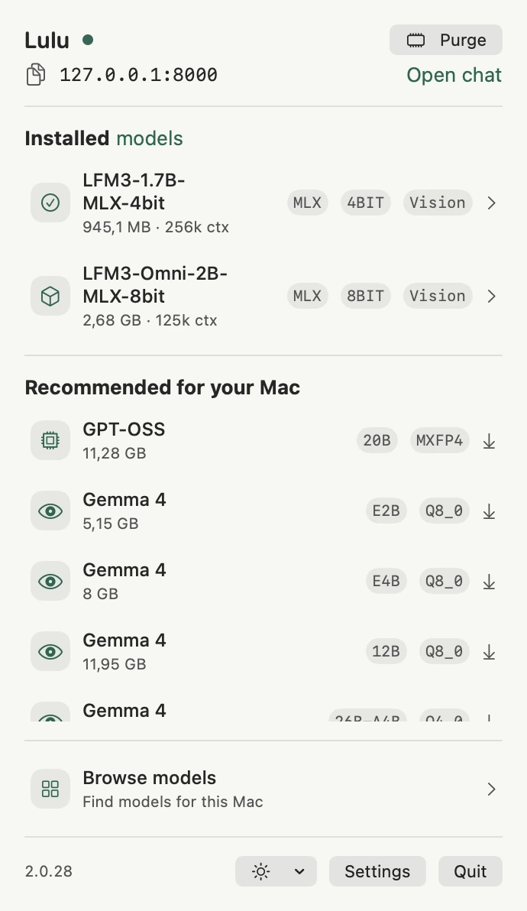
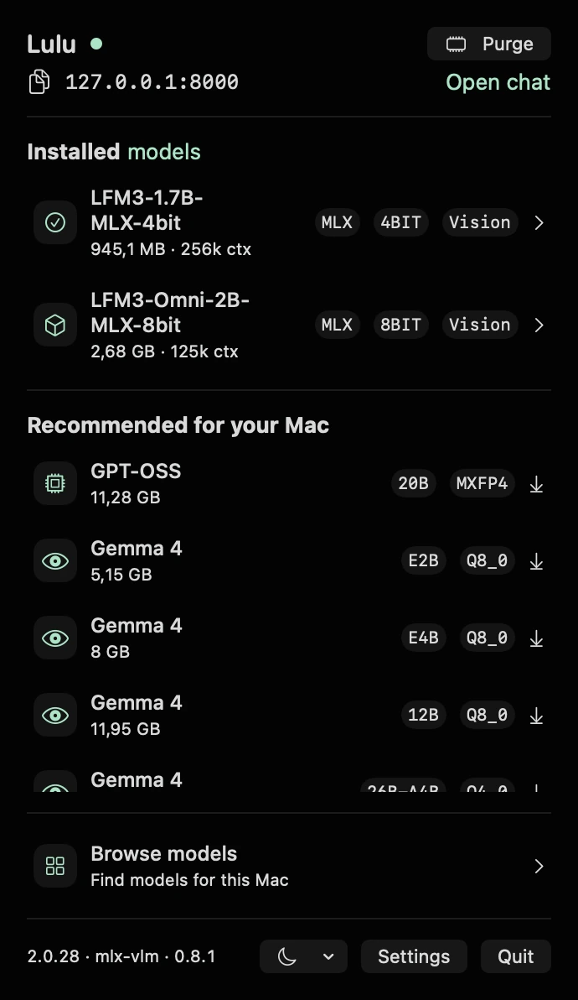

mlx-lm, mlx-vlm, llama.cpp.
Instale os motores integrados e organize modelos MLX e GGUF do Hugging Face. O catálogo também instala Ollama, LM Studio, Jan e GPT4All. Esses apps continuam donos dos próprios modelos e do próprio servidor.
GRÁTIS · CÓDIGO ABERTO · MACOS
Coloque a potência do seu Mac para trabalhar. Baixe e rode modelos de IA, converse no chat local ou conecte suas ferramentas pela API compatível com a OpenAI. O Lulu é gratuito e de código aberto.
Assista à demonstraçãomacOS 14 ou mais recente · Versão atual

Chat localApp nativo em SwiftCódigo aberto, MITNotarizado pela AppleApple Silicon e Intel
PEQUENO DE PROPÓSITO
O Lulu faz uma coisa: deixar um modelo rodando no seu Mac e mostrar o que isso custa. O llama.cpp entra pelo Homebrew, o MLX pelo uv, e os modelos ficam em ~/models/mlx e ~/models/gguf. O download não inclui esses motores.
Medido em 16 de novembro de 2026 em um Apple M4, 24 GB, macOS 27.2.1, Lulu 2.0.21. Disco: du -sh /Applications/Lulu.app (6.700 KiB). Memória: uma leitura de footprint de 66 MB. O RSS do ps ficou em cerca de 146 MB, e esse número inclui páginas compartilhadas. Disco e RAM do LM Studio e do Ollama não foram medidos nesta máquina, então esta página não diz que o Lulu usa menos memória do que eles. A memória do modelo depende do modelo e do contexto.
DO DOWNLOAD À PRIMEIRA REQUISIÇÃO



http://127.0.0.1:8000/v1 ou deixe o Lulu configurar as ferramentas.Escolha um modelo, abra o chat ou copie o endereço da API sem abrir a janela principal. O Lulu pode continuar rodando depois que você fecha a janela.


VÍDEO · PRIMEIROS PASSOS
Veja o caminho para começar com o Lulu.
Instale os motores integrados e organize modelos MLX e GGUF do Hugging Face. O catálogo também instala Ollama, LM Studio, Jan e GPT4All. Esses apps continuam donos dos próprios modelos e do próprio servidor.
Sirva um modelo baixado em uma API compatível com a OpenAI, só em 127.0.0.1. O llama.cpp exige a chave que o Lulu guarda no Keychain. Os clientes configurados recebem essa chave. mlx-lm e mlx-vlm sobem sem ela.
Um clique grava o servidor local no OpenCode, Cursor, Codex, Claude Code, Aider, Zed, Antigravity, OpenClaude e DeepSeek. O mlx-lm não serve /v1/responses nem /v1/messages, e o Lulu avisa no Codex e no Claude Code.
O Purge encerra o servidor, descarrega o modelo e pede ao macOS para liberar memória inativa. A liberação de memória do sistema pede autorização de administrador.
Veja a memória do processo, os pesos, o cache KV e o contexto. Tokens por segundo aparecem quando o motor informa. O Lulu mostra um traço quando o valor não existe.
Perguntas e respostas ficam no seu Mac. Busca, download e instalação de motores usam a rede. O chat roda no navegador e usa o servidor local do Lulu.
CONECTE SUAS FERRAMENTAS
O Lulu grava o endpoint, o nome do modelo e a chave nos clientes abaixo. Os outros provedores e chaves permanecem. Abra o programa de novo depois de configurar. No Cursor, feche o app antes.
Base URL: http://127.0.0.1:8000/v1
Chave: lulu_••••••••
O Codex usa /v1/responses e o Claude Code usa /v1/messages. O mlx-lm não serve esses caminhos. Os nomes acima são os clientes que o Lulu configura. Os logotipos deles não aparecem aqui.
GUIA PRÁTICO · LULU + OPENCODE
Use o LFM3-Omni-2B com o servidor local do Lulu. Este caminho usa a versão GGUF e o llama.cpp.
Instale o Lulu e o OpenCode. Em Engines, instale o llama.cpp; o Lulu precisa do Homebrew para isso. Use uma versão recente do motor com suporte ao LFM3-Omni.
Em Models, busque LiquidAI/LFM3-Omni-2B-GGUF. Selecione a quantização Q4_K_M e confira que o arquivo mmproj também está selecionado. Inicie o download e espere terminar.
Em Server, escolha o modelo baixado, comece com um contexto moderado (por exemplo, 8K) e clique em Start server. Aguarde o servidor ficar pronto; a porta padrão é 8000.
Na mesma tela, na seção de clientes, configure OpenCode. O Lulu grava o endpoint, a chave e o modelo em ~/.config/opencode/opencode.json (ou no JSONC existente) e o define como padrão. Reinicie o OpenCode e execute opencode no diretório do projeto.
Peça uma tarefa pequena, como explicar um arquivo. Se falhar, confira o log do servidor, a porta, a chave e o modelo selecionado; reconfigure o cliente após trocar a chave ou o modelo. Se o JSONC contiver comentários, o Lulu pode não conseguir editá-lo: faça backup e remova os comentários antes de tentar novamente.
O modelo é multimodal, mas isso não garante que áudio, vídeo ou chamadas de ferramentas funcionem em todas as combinações de llama.cpp e OpenCode. O fluxo acima foca em texto; capacidade de agente e qualidade de código variam. A integração completa não foi testada nesta máquina.
Fontes: modelo e instruções do fabricante · provedores do OpenCode.
O QUE JÁ ESTÁ NESTE MAC
O catálogo de motores instala e abre Ollama, LM Studio, Jan e GPT4All, pelo Homebrew ou pelo download oficial. Cada app fica com os próprios modelos e o próprio servidor. Abrir o catálogo não instala nada. O Lulu não inicia nem remove KoboldCpp, Strata ou Colibri.
COMPARAÇÃO
Ferramentas diferentes, trabalhos diferentes. O tamanho do instalador é o download, não o app depois da instalação, e não a memória com um modelo carregado.
| Lulu | LM Studio | Ollama | |
|---|---|---|---|
| O que é | App nativo para Mac com motores, modelos, chat e API local. | App de mesa com o Bionic, um agente para documentos, código e voz. | App e runtime para modelos abertos, nesta máquina ou na nuvem. |
| Instalador no Mac | 3,1 MB no Apple Silicon, 3,2 MB no Intel | 572,5 MB, build Apple Silicon | 230,0 MB |
| Motores | mlx-lm, mlx-vlm, llama.cpp | MLX e llama.cpp | O app e a linha de comando do Ollama |
| API compatível com a OpenAI | Sim, em 127.0.0.1 | Sim | Sim |
| Mac Intel | Sim. GGUF com llama.cpp. | Não. No Mac, só Apple Silicon. | Não confirmado nesta página. |
| Código aberto | Sim. MIT. | A página do produto não diz. | Sim. MIT. |
| Chat ou agente no app | Chat local no navegador. | Sim. Bionic. | O app é um jeito de rodar modelos, inclusive pelo terminal. |
Tamanhos de instalador em 16 de novembro de 2026. Lulu v2.0.21: DMG Apple Silicon com 3.125.176 bytes, DMG Intel com 3.170.406 bytes, na release do GitHub. Ollama v0.40.16, Ollama.dmg: 229.996.388 bytes. Jan v0.8.8, DMG universal, fora da tabela: 115.908.917 bytes (115,9 MB). O LM Studio 0.4.28 build 2 é o build Apple Silicon listado em lmstudio.ai/download no mesmo dia. 572,5 MB é a medição daquele dia do download oficial para Mac. A URL nasce na página, então não foi baixada de novo aqui. O DMG do Lulu não inclui os motores. Disco depois da instalação e RAM em repouso foram medidos só para o Lulu. Fontes: lmstudio.ai, requisitos, compatibilidade com a OpenAI, ollama.com, compatibilidade do Ollama, licença MIT do Ollama.
MEMÓRIA
Acompanhe a velocidade de geração e o uso da memória unificada do Mac. O Lulu também mostra a memória usada pelo modelo, o tamanho do contexto e a estimativa do cache KV.
Libere memória com o Purge. Na janela principal ou na barra de menus, o Purge encerra o servidor local, descarrega o modelo e pede ao macOS para liberar memória inativa. O macOS solicita autorização de administrador. A quantidade liberada depende do estado do sistema.

PRIVACIDADE
Modelos em ~/models/mlx e ~/models/gguf. Sessão e logs em ~/.lulu/. O token do Hugging Face e a chave do servidor ficam no Keychain. O servidor escuta só em 127.0.0.1.
O Lulu não tem analytics nem relatório de falhas. A rede entra quando você busca ou baixa modelos, quando instala um motor e quando clica em Check for updates. O Sparkle não envia perfil do sistema e não checa em segundo plano. Privacidade.
FAQ
Sim. O Lulu é grátis e o código é aberto, licença MIT. Não há conta nem compra no app.
O Lulu é um app nativo para Mac com chat local no navegador. Os motores entram à parte, pelo Homebrew ou pelo uv, e os modelos ocupam o espaço que precisam. No Mac medido acima, o app tem 6,5 MB em disco e 66 MB de footprint em repouso. Isso não inclui um modelo.
mlx-lm e mlx-vlm para modelos MLX, só em Apple Silicon. llama.cpp para GGUF, em Apple Silicon e Intel.
O llama.cpp instala pelo Homebrew e o MLX pelo uv. O Lulu não instala nenhum dos dois. Se faltar um, a tela Engines avisa.
A inferência roda no seu Mac. Buscar, baixar e instalar motores precisa de conexão.
Sim. O Lulu configura esses três, e também OpenCode, Aider, Zed, Antigravity, OpenClaude e DeepSeek. O mlx-lm não serve os caminhos que o Codex e o Claude Code pedem, e o Lulu avisa quando esse motor está selecionado.
Use o Lulu quando quiser um painel pequeno para MLX e llama.cpp, um servidor local compatível com a OpenAI e o detalhe de memória. O catálogo ainda instala e abre Ollama, LM Studio, Jan ou GPT4All.
O Unsloth Desktop roda e treina modelos, e gera imagem e vídeo. O Lulu não treina. Ele roda e serve modelos.
Ela para o servidor do Lulu, solta o modelo e pede ao macOS para liberar memória inativa. Precisa da senha de administrador. Não há um volume garantido.
Sim. As releases são assinadas com Developer ID e notarizadas pela Apple. Neste Mac, o Lulu 2.0.21 é aceito como app Notarized Developer ID, e o DMG de Apple Silicon passa na validação do ticket de notarização.
Nada checa em segundo plano. Na tela Overview, Check for updates procura uma release assinada, e o Sparkle instala. O envio de perfil do sistema está desligado.
macOS 14 ou mais recente, Apple Silicon ou Intel. MLX precisa de Apple Silicon. O tamanho do modelo que cabe depende da memória do Mac. Nos requisitos do próprio LM Studio, o Mac é só Apple Silicon.
SEU MAC. SEUS MODELOS.
Grátis · MIT · macOS 14 ou mais recente